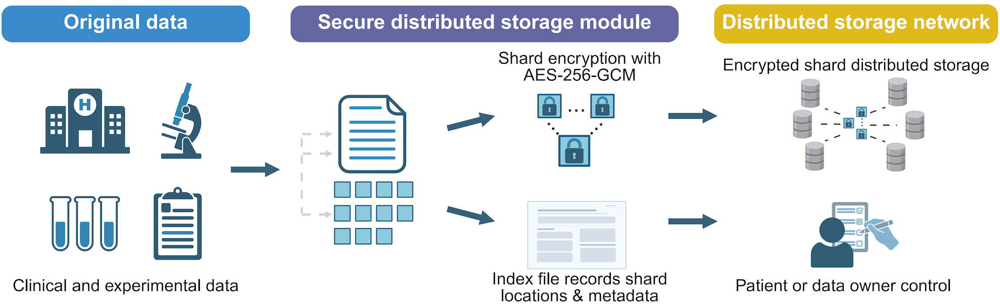

BioLock
A prototype system for secure distributed storage of biological data: files are split into slices, each encrypted with AES-256-GCM, and can only be restored by their owner.

Run it locally
git clone <repository URL> cd <repository folder>/BioLockApp_20260309 pip install -r requirements.txt streamlit run app.py
See the README for the user guide and security notes.